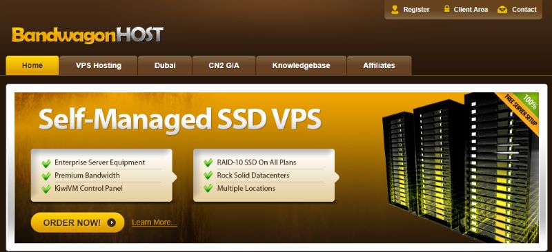
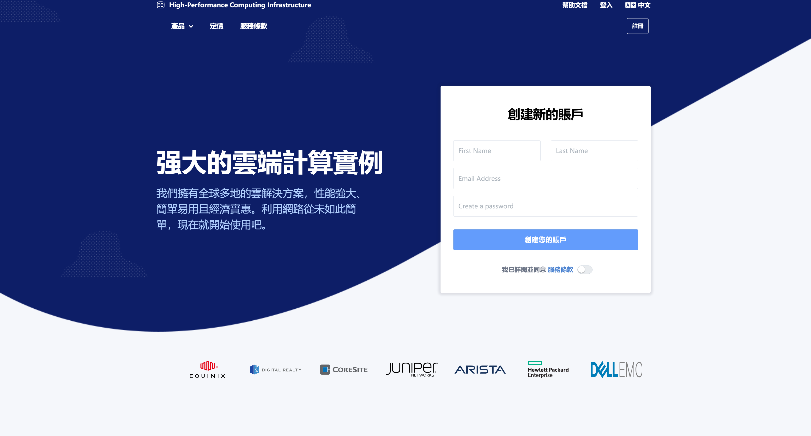
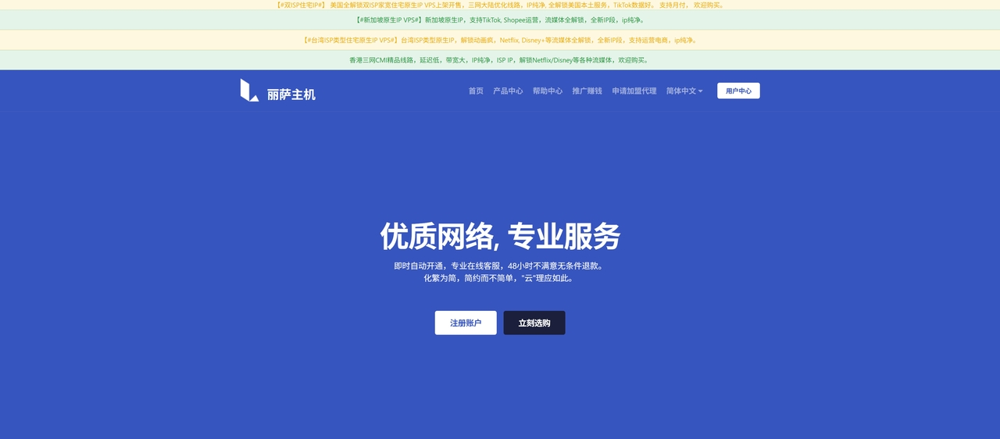
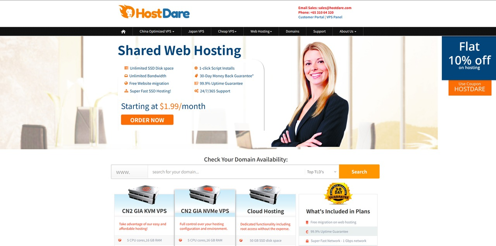
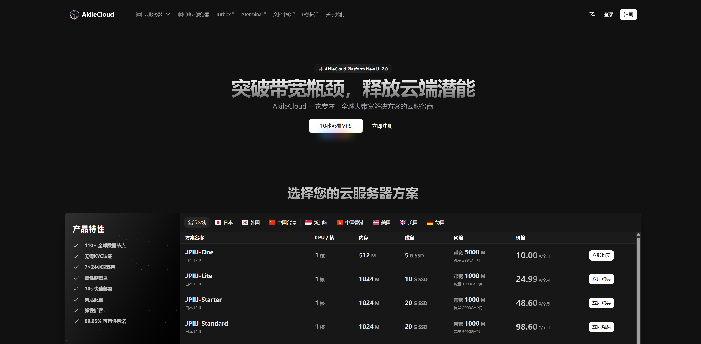
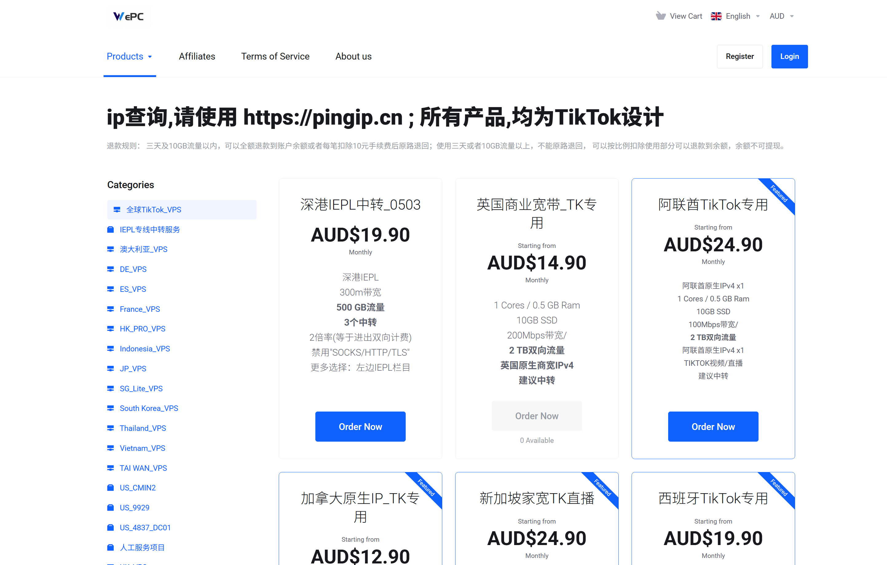

挑 VPS 可不是随便点几下就完事的事情。市场上 VPS 商家太多、套餐五花八门，便宜的可能速度慢得抓狂，高配的又贵得让人心疼。再加上不同机房、线路、带宽、流量限制和隐藏费用，稍不注意就容易踩坑。
不管你是想建个人网站、WordPress 博客，还是需要一台能科学上网、搭梯子、跑任务的 VPS，选对商家和配置才是关键。 这篇指南帮你理清思路，告诉你哪些 VPS 值得买、哪些坑要避开，同时还会教你如何测试网络性能、了解退款政策和识别隐藏费用，让你用得安心又划算。
先给结论：搭梯子VPS推荐哪家？
如果你不想读完全文，下面按预算和用途把商家分成四档，直接对号入座。 所有价格为本文整理时的参考价，商家促销与调价频繁，实际以官网结算页为准。
预算充足 · 只要线路最好
这一档的共同点是贵，但晚高峰不掉链子。如果你受不了卡顿、又不想反复折腾换机器，直接从这里选。
按需选线路 · 高性价比平替
CN2 GIA 确实贵。这两家的做法是把优质线路和普通线路都摆出来，让你按预算挑，是搬瓦工和 DMIT 最常见的平替。
有明确用途 · 专项优化
如果你的需求很具体——要大带宽、要解锁流媒体、要做 TikTok、要干净的原生 IP——通用机器不如专门优化过的划算。这一档买的不是便宜，是某项具体能力。
AkileCloud¥29.99/月起
大带宽 VPS，1Gbps + 按流量计费，看 4K、跑下载都够
丽萨主机¥68/月起
支持全流媒体解锁，Netflix / Disney+ / YouTube 原生 IP
WePC¥59.50/月起
TikTok 的优化线路与原生 IP，短视频运营省心
666Clouds¥45/月起
七地区原生 IP / 双 ISP，线路细分到 AS 号，注册海外账号和解锁不容易被拦
预算优先 · 便宜低价搭梯子建站
预算有限，或者只是想多备几个备用节点。这一档线路普通、晚高峰会掉速，但胜在便宜到可以随手多开几台。
一句话建议：先买月付试一周，用 ping 和三网回程测试确认自己所在地区的实际速度，满意再转年付。绝大多数「翻车」都是因为没测试就直接年付。
搭梯子VPS怎么选：线路、带宽与预算
很多人挑梯子VPS时只盯着 CPU 和内存，其实搭梯子对配置的要求极低——1 核 1G 就足够跑 Shadowsocks、V2Ray、Xray、Hysteria、WireGuard 等主流协议，几十台设备同时用也不成问题。 真正决定体验的是另外三件事：回程线路、带宽与流量、IP 是否干净。
一、回程线路：决定晚高峰会不会卡
线路是科学上网VPS体验差异最大的因素。同样是美国机房，普通线路晚上 8 点可能只剩几百 Kbps， 优质线路却能稳定跑满。下面是国内三大运营商常见回程线路的对比：
| 线路 | 运营商 | 质量 | 晚高峰表现 | 适合人群 |
|---|---|---|---|---|
| CN2 GIA（AS4809） | 电信 | 顶级 | 几乎不掉速，美西延迟约 130–160ms | 电信用户、追求稳定、看 4K / 视频会议 |
| CN2 GT（AS4809） | 电信 | 良好 | 高峰有一定波动，但明显好于 163 | 预算有限的电信用户 |
| AS9929 | 联通 | 顶级 | 低延迟低丢包，稳定性接近 CN2 GIA | 联通用户首选 |
| AS4837 | 联通 | 中等 | 白天表现不错，晚高峰有波动 | 联通用户的性价比之选 |
| CMIN2（AS58807） | 移动 | 优秀 | 移动用户延迟低、绕路少 | 移动宽带用户 |
| CMI（AS58453） | 移动 | 中等 | 高峰容易拥堵 | 移动用户的入门选择 |
| 163 骨干网 | 电信 | 普通 | 晚高峰拥堵明显，可能大幅掉速 | 预算最低、对速度不敏感 |
怎么选：看你家宽带是哪个运营商。电信选 CN2 GIA，联通选 AS9929 / AS4837，移动选 CMIN2。如果家里有多个运营商或经常切换网络，选标注「三网优化 / 三网直连」的套餐最省心。
二、带宽与流量：1M 带宽到底够不够？
带宽决定「多快」，流量决定「能用多久」，两者是完全不同的指标，很多新手会混淆。以搭梯子的实际消耗做参考：
| 带宽 | 理论下载速度 | 实际能干什么 | 结论 |
|---|---|---|---|
| 1 Mbps | 约 0.125 MB/s | 刷网页、收发消息勉强够，看视频只能 360p | 不推荐，体验很差 |
| 30–50 Mbps | 约 4–6 MB/s | 1080p 流畅，日常浏览无压力 | 单人自用够了 |
| 100–200 Mbps | 约 12–25 MB/s | 4K 视频、大文件下载、多设备同时使用 | 2–5 人共用推荐 |
| 1 Gbps（1000M） | 约 125 MB/s | 跑满家庭宽带、BT/PT 下载、多人共享 | 需搭配大流量或按流量计费套餐 |
流量方面的经验值：单人日常科学上网每月约 100–300GB；经常看 1080p / 4K 视频的，每月约 500GB–1TB；如果要跑 BT/PT 下载，建议直接选不限流量或 2TB 以上的套餐。
大带宽VPS通常有两种计费方式：固定带宽 + 月流量包（如 1Gbps / 1TB）， 以及按流量计费（如 AkileCloud 的 1000M / 2500GB 套餐）。前者适合稳定使用，后者适合用量波动大的场景，用多少付多少更划算。
三、按预算分档：便宜梯子VPS怎么买
| 预算档位 | 能买到什么 | 推荐商家 | 适合谁 |
|---|---|---|---|
| ¥10–20/月 （年付折算） |
1核1G + 3TB 流量、1Gbps 端口，普通国际线路，晚高峰会掉速 | RackNerd（$21.99/年起，约合 ¥13/月） | 纯练手、备用节点、预算极低 |
| ¥20–40/月 | 1核1G–2G，大带宽或按流量计费；也可按小时计费 | AkileCloud（¥29.99 起）、Vultr（约 $2.5 起）、HostDare（年付折算） | 日常够用的甜点位，看 1080p 无压力 |
| ¥40–80/月 | CN2 GIA / AS9929 优质线路，或原生 / 住宅 IP | ByteVirt（$5.5 起）、666Clouds（¥45 起）、丽萨主机（¥68 起） | 要晚高峰稳定，或需要干净 IP 做解锁 |
| ¥80 以上/月 | 顶级线路 + 流媒体原生解锁 + 高防，长期稳定 | DMIT（$9.99 起）、搬瓦工 | 追剧、跨境电商、多人共享、商用 |
关于「10元以内的梯子VPS」：在有口碑的商家里，折算到月 10 元以内的套餐基本已经没有了。 目前的地板价大致是 RackNerd 的 $21.99/年（1核1G + 3000GB 流量、1Gbps 端口），折合每月约 13 元。 而且要清楚代价：这类机器走的是普通国际线路，晚高峰掉速是常态，看高清视频基本别想。 它的正确用法是当备用节点、练手机器，主力节点还是得往上加预算。 真正要避开的是那些没有口碑、只收加密货币、价格低到离谱的小商家——跑路风险远大于省下的那点钱。
如何根据需求选择VPS
在挑选 VPS服务器 时，不同的用途决定了你需要关注的重点。 如果是做 跨境电商，最重要的是网络速度和全球访问的稳定性， 建议优先考虑线路优化良好的方案，例如 CN2 GIA VPS推荐、香港低延迟VPS 或者 美国VPS服务器。 这些节点不仅能兼顾国内买家和欧美客户的访问速度，还能在跨境广告推广高流量的情况下保持网站稳定。 对于有较大访问量或需要保障安全的卖家，还可以选择 大带宽VPS 或 高防御VPS，有效避免因攻击或流量过载导致的宕机问题。
如果是做 博客建站，则更看重长期性价比和SEO优化效果，可以选择 支持WordPress VPS建站 的方案，搭配 独立IP VPS主机 和 SSD VPS高速硬盘，能够显著提升网站加载速度与搜索引擎排名。 对于刚开始做个人博客或内容站点的用户，可以选择 便宜好用的国外VPS 起步； 而中大型网站则更适合 可扩展的云VPS，方便后期升级CPU、内存和带宽，支持更大规模的流量增长。
而对于需要 搭梯子、科学上网 的用户，则应重点考虑线路质量和解锁能力，选择 美国VPS、日本VPS 或 香港CN2 VPS，不仅速度快，而且对 Netflix、Disney+、TikTok、ChatGPT 等国际服务的解锁更友好。
10家高性价比VPS商家推荐与套餐价格
| 商家 | 亮点 / 优势 | 推荐用途 | 适合人群 |
|---|---|---|---|
| 搬瓦工 | 优质 CN2 GIA，老牌稳定、社区资料多；价格相对较贵 | 科学上网 建站 流媒体 | 预算充足、想一步到位不折腾 |
| DMIT | 高质量线路 + DDoS 防护，性能强悍；价格相对较贵 | 科学上网 企业建站 高防业务 | 对可用性与性能要求高的用户 |
| ByteVirt | CN2 GIA 偏贵，但同时提供 AS9929 与普通线路，可按预算选档 | 科学上网 按需选线路 | 想上优质线路但预算卡在中间的人 |
| HostDare | CN2 GIA / AS9929 的平替，年付价格低于搬瓦工、DMIT | 科学上网 轻量建站 | 想要搬瓦工 / DMIT 替代方案的用户 |
| AkileCloud | 1Gbps 大带宽 + 按流量计费，多地区节点 | 大流量传输 4K 观影 BT 下载 | 需要跑流量、看高码率视频的用户 |
| 丽萨主机 | 支持 全流媒体解锁（Netflix / Disney+ / YouTube），原生 IP | 追剧观影 社媒运营 | 海外华人、追剧党、内容运营 |
| WePC | 面向 TikTok 的优化线路，原生解锁更省心 | TikTok 创作 短视频投放 | 只为 TikTok 而来的人、短视频团队 |
| 666Clouds | 原生 IP / 双 ISP，七地区、线路细分到 AS 号；¥45/月 起 | 解锁流媒体 海外账号注册 | 需要干净 IP、又不想花大钱的用户 |
| RackNerd | 年付十几美元，促销价永久锁定不涨价；线路普通 | 便宜搭梯子 备用节点 练手 | 预算极低、想多备几个节点的人 |
| Vultr | 按小时计费，全球 30+ 机房，随开随停；无国内优化 | 测试线路 临时用途 冷门地区 | 需要灵活开关机、临时验证的用户 |
搬瓦工（BandwagonHost） - 老牌商家
如果你混迹 VPS 圈子一段时间，一定听过 搬瓦工（BandwagonHost） 这个名字。它算是“老牌”海外 VPS 服务商了，很多人把它当作入门 VPS 的首选。
我自己最早就是从搬瓦工开始折腾 VPS 的。那时候完全是个小白，看到大家都在推荐搬瓦工，说它“便宜、稳定、对新手友好”，就试着买了一个套餐，结果一用就用了好几年。

搬瓦工（BandwagonHost） VPS 比较适合：
-
建站：搭建个人博客、小型网站，访问稳定性不错。
-
科学上网/搭梯子：CN2 GIA 套餐延迟低，速度稳定，是很多人首选。
-
学习/练手：新手入门 VPS，熟悉 Linux 环境、建站、脚本部署等。
-
轻量应用：挂个小爬虫、跑个 API 服务，都可以。
搬瓦工（BandwagonHost） 套餐与价格
| 存储空间 | 内存 / CPU | 月流量 | 带宽 | 年付价格 | 购买链接 |
|---|---|---|---|---|---|
| 20GB SSD | 1GB / 2 核 | 1TB | 1Gbps | $49.99 | 立即购买 |
| 40GB SSD | 2GB / 3 核 | 2TB | 1Gbps | $99.99 | 立即购买 |
| 80GB SSD | 4GB / 4 核 | 3TB | 1Gbps | $199.99 | 立即购买 |
| 160GB SSD | 8GB / 5 核 | 4TB | 1Gbps | $399.99 | 立即购买 |
| 320GB SSD | 16GB / 6 核 | 5TB | 1Gbps | $799.99 | 立即购买 |
| 480GB SSD | 24GB / 7 核 | 6TB | 1Gbps | $1,199.99 | 立即购买 |
* 表格中的价格与产品可能因调整导致数据更新滞后，仅供参考
如果你是第一次接触 VPS，或者想找一台 稳定又划算 的海外 VPS 来建站、科学上网，那么搬瓦工绝对可以列入首选。 它的入门套餐年付只要 49.9 美元，价格不算高，性价比还是很不错的。
DMIT - 稳定靠谱的优质选择
DMIT 成立于 2017 年，总部在美国，但主要用户群体是亚洲市场。它的定位一直是 高端 VPS 服务商，主打 CN2 GIA、香港和美国洛杉矶高质量线路。 相较于便宜商家，DMIT 的价格不低，但稳定性、速度和售后支持都在业内属于一线水准。我在 2021 年买过 DMIT 的香港 CN2 GIA 套餐，跑了一年多，体验非常稳。

我选择 DMIT 的原因很简单。首先，它的网络线路非常给力，CN2 GIA 和 Premium 线路 对国内用户尤其友好，无论是科学上网还是搭梯子，延迟低、速度快，体验就像“高铁 WiFi”。 其次，稳定性非常强，我最怕买到 VPS 后用着用着就抽风，而 DMIT 虽然价格不是最低，但跑网站、挂代理几乎没掉过线，完全对得起价格。 再者，它的 高防能力 对建站党尤其有用，做外贸或跨境电商时，小流量攻击也能轻松应对，免去后顾之忧。 最后，售后也很靠谱，遇到配置或网络问题，响应迅速，不像一些便宜 VPS 商家，工单要么不回，要么回得慢，总体来说，DMIT 提供的是一个长期稳定、省心的高质量 VPS 解决方案。
结合我个人的使用体验，DMIT VPS 比较适合：
-
建站党（跨境电商、博客）
稳定 + 高防，适合长期建站。国内访问速度表现不错，不会出现客户打开半天才出来页面的尴尬。
-
科学上网 / 搭梯子
这是它家的强项，CN2 GIA + 稳定线路，用起来非常顺畅；无论是刷 YouTube、Netflix 还是使用 ChatGPT或者社交媒体平台，都能满足。
-
需要高稳定性的用户
如果你是长期用 VPS 工作或生活的用户，宁愿多花点钱买省心，也别被几美元的低价 VPS 诱惑。DMIT 是典型的“花钱买稳定”的选择。
DMIT 套餐与价格
美国洛杉矶 Premium Network| 套餐 | 处理器 / 内存 | 硬盘 | 流量 | 带宽 | 价格 | 购买链接 |
|---|---|---|---|---|---|---|
| TINY | 1 核 / 2GB | 20GB SSD | 1000GB | 1Gbps | $9.99/月 | 立即购买 |
| 2 核 / 2GB | 40GB SSD | 1500GB | 4Gbps | $14.90/月 | 立即购买 | |
| STARTER | 2 核 / 2GB | 80GB SSD | 3000GB | 10Gbps | $29.90/月 | 立即购买 |
| 套餐 | 处理器 / 内存 | 硬盘 | 流量 | 带宽 | 价格 | 购买链接 |
|---|---|---|---|---|---|---|
| TINY | 1 核 / 1GB | 20GB SSD | 500GB | 1Gbps | $39.90/月 | 立即购买 |
| STARTER | 1 核 / 2GB | 40GB SSD | 1000GB | 1Gbps | $79.90/月 | 立即购买 |
| MINI | 2 核 / 2GB | 60GB SSD | 1500GB | 1Gbps | $119.90/月 | 立即购买 |
| 套餐 | 处理器 / 内存 | 硬盘 | 流量 | 带宽 | 价格 | 购买链接 |
|---|---|---|---|---|---|---|
| TINY | 1 核 / 1GB | 20GB SSD | 500GB | 1Gbps | $21.90/月 | 立即购买 |
| STARTER | 1 核 / 2GB | 40GB SSD | 1000GB | 1Gbps | $39.90/月 | 立即购买 |
| MINI | 2 核 / 2GB | 60GB SSD | 2000GB | 1Gbps | $79.90/月 | 立即购买 |
* 表格中的价格与产品可能因调整导致数据更新滞后，仅供参考
虽然 DMIT 的价格相比一些小厂商并不算低，但它凭借优质线路和出色的服务，成为了性价比极高的高端 VPS 服务商。 坦白说，如果你只是偶尔玩玩 VPS、预算有限，可能会觉得它价格稍高。但如果你像我一样，希望拥有一台能 长期使用、稳定、省心 的 VPS，无论是建站还是搭梯子、科学上网，DMIT 都是非常值得推荐的。
我自己已经续费了一年，并且计划将更多项目迁移到 DMIT 上。如果你对 VPS 的要求和我一样，追求稳定、安心的长期使用体验，那么不妨亲自试试 DMIT，相信它会带来不一样的感受。
ByteVirt - 优质线路与普通线路都有，按预算选档
ByteVirt 是一家国人运营的商家，公司注册在美国密苏里州，2023 年成立。它解决的是一个很现实的矛盾： CN2 GIA 确实好，但也确实贵。
大部分商家要么只做精品线路（贵），要么只做普通线路（便宜但晚高峰卡）。ByteVirt 的做法是把 CN2 GIA、Elite（AS9929）、日本东京优化、香港 KVM 几条产品线并排摆出来， 同样的预算你可以自己决定：是买低配的 GIA，还是买高配的普通线路。对预算卡在中间的人来说，这个选择权很有价值。
ByteVirt 比较适合：
-
想上 CN2 GIA 但预算有限：512MB 的 GIA 入门款 $5.50/月，比大厂的 GIA 门槛低不少。
-
联通用户：Elite 系列走 AS9929 精品网，带宽上限给到 800Mbps–1Gbps，比 GIA 系列的 500Mbps 更高。
-
需要日本 / 香港节点：东京优化和香港 KVM 价格更低，适合做中转或延迟敏感的场景。
实测参考：洛杉矶 CN2 GIA 入门款电信、移动延迟约 157ms， 联通约 175ms——因为联通出程走的不是精品线路，回程才强制走 GIA。 联通用户更建议直接选 Elite（AS9929）系列。底层为 AMD EPYC + KVM，免费提供 3 个快照 + 1 个备份，支持支付宝与 USDT。
ByteVirt 套餐与价格
同一家商家里三条线路并存，注意看清楚你买的是哪一条：
美国洛杉矶 CN2 GIA（三网回程 GIA，移动走 CMIN2）| 配置 | 硬盘 | 月流量 | 带宽 | 参考价 | 购买 |
|---|---|---|---|---|---|
| 1 核 / 512MB | 15GB SSD | 500GB | 500Mbps | $5.50/月 | 立即购买 |
| 1 核 / 1GB | 20GB SSD | 1TB | 500Mbps | $8.00/月 | 立即购买 |
| 2 核 / 2GB | 40GB SSD | 2TB | 500Mbps | $16.50/月 | 立即购买 |
| 4 核 / 8GB | 100GB SSD | 1TB | 500Mbps | $25.00/月 | 立即购买 |
| 配置 | 硬盘 | 月流量 | 带宽 | 参考价 | 购买 |
|---|---|---|---|---|---|
| 1 核 / 1GB | 20GB SSD | 1TB | 500Mbps | $5.50/月 | 立即购买 |
| 2 核 / 2GB | 40GB SSD | 2TB | 800Mbps | $13.00/月 | 立即购买 |
| 3 核 / 3GB | 60GB SSD | 3TB | 800Mbps | $21.00/月 | 立即购买 |
| 8 核 / 8GB | 120GB SSD | 8TB | 1Gbps | $72.00/月 | 立即购买 |
| 配置 | 硬盘 | 月流量 | 带宽 | 参考价 | 购买 |
|---|---|---|---|---|---|
| 1 核 / 1GB | 30GB SSD | 1TB | 800Mbps | 约 $5.00/月 | 立即购买 |
| 2 核 / 2GB | 50GB SSD | 1.5TB | 1Gbps | 约 $8.33/月 | 立即购买 |
| 4 核 / 8GB | 50GB SSD | 5TB | 1Gbps | $25.00/月 | 立即购买 |
* 表格中的价格与产品可能因调整导致数据更新滞后，仅供参考
ByteVirt = 线路可选 + 价格分层。 如果你在「买 GIA 太贵、买普通线路又怕卡」之间犹豫，这家能让你自己找到平衡点。
丽萨主机 - 专注于高端CN2线路的优质之选
丽萨主机（LizaHost） 是一家主打高性价比的 VPS 服务商，常见机房分布在 香港、日本、新加坡、美国西海岸 等地，网络优化比较友好，适合有亚洲和北美访问需求的用户。 它家的产品特点是 价格实惠、线路多样，同时提供按月和按年计费方式，适合新手用户建站、博客建站、轻量化应用部署。不过丽萨主机整体规模不算大，建议购买前留意售后响应和节点稳定性。

丽萨主机 VPS 比较适合：
-
跨境电商建站：免备案建站更省心。
-
社交媒体运营：TikTok、Facebook、Instagram 等多账号管理。
-
全流媒体解锁：Netflix、Disney+、ChatGPT 等海外服务无障碍访问。
-
科学上网/搭梯子：稳定节点，延迟低，体验好。
丽萨主机 套餐与价格
丽萨主机的套餐覆盖从入门到高配，常见的年付在 30~50 美元左右 的低配 VPS 就能满足基础需求。如果做 TikTok 或跨境电商，建议上中高配套餐，带宽更大更稳定。
| 套餐名称 | 配置 | 价格 | 购买链接 |
|---|---|---|---|
| 美国9929住宅IP | KVM/1核/1G/20GNVMe固态硬盘/60Mbps带宽/2000GB 流量 | ¥88/月 | 立即购买 |
| 美国4837进阶版住宅IP | KVM/2核/2G/40GNVMe固态硬盘/500Mbps带宽/8000GB 流量 | ¥100/月 | 立即购买 |
| 香港三网CMIISP | KVM/2核/2G/40G NVMe固态硬盘/50Mbps带宽/5000GB 流量 | ¥188/月 | 立即购买 |
| 香港HGC原生住宅IP | KVM/2核/2G/40G NVMe固态硬盘/100Mbps带宽/5000GB 流量 | ¥299/月 | 立即购买 |
| 英国双ISP住宅IP | KVM/1核/1G/10GNVMe固态硬盘/300Mbps带宽/6000GB 流量 | ¥68/月 | 立即购买 |
| 韩国双ISP住宅IP | KVM/1核/1G/20GNVMe固态硬盘/100Mbps带宽/3000GB 流量 | ¥99/月 | 立即购买 |
* 表格中的价格与产品可能因调整导致数据更新滞后，仅供参考
如果你平时需要用 VPS 来做 社交媒体运营（TikTok、Facebook、YouTube 等），或者想要一台能 解锁全流媒体 的服务器，那么丽萨主机（LizaHost）一定值得了解一下。 相比传统 VPS 提供商，丽萨主机最大的特色就是：解锁能力强，特别适合海外用户做内容分发、跨境电商和视频平台。
HostDare - 便宜 CN2 VPS
如果你需要一台 美国 VPS，既要便宜，又要对国内访问友好，那么 HostDare 是一个值得考虑的选择。 它成立于 2014 年，总部位于新加坡，在业内知名度不算高，但凭借 CN2 优化线路 和 超高性价比，在国内用户中积累了不错的口碑。

HostDare 提供多种线路方案，包括 CN2 GIA、CU VIP、CMI 等，对中国大陆访问比较友好。特别是 CN2 GIA，延迟低，丢包少，很适合建站或科学上网。
HostDare 推荐用途：
-
国内用户建站：CN2 优化线路保证访问速度快
-
轻量应用：博客、小型论坛、企业站点
-
科学上网：延迟低，稳定性不错，BandwagonHost、dmit的平替选择
-
学习/练手：价格便宜，新手上手无压力
HostDare 套餐与价格
不同套餐和线路的价格会随促销有所波动，建议关注官网优惠信息
| 方案 | CPU / 内存 | 硬盘容量 | 带宽（月流量） | 上传速度 | 价格 | 购买链接 |
|---|---|---|---|---|---|---|
| CKVM1 | 1 核 / 756 MB | 35 GB | 600 GB/月 | 50 Mbps | $49.99/年 | 立即购买 |
| CKVM2 | 2 核 / 1.5 GB | 75 GB | 1000 GB/月 | 60 Mbps | $76.99/年 | 立即购买 |
| CKVM3 | 3 核 / 4 GB | 150 GB | 1500 GB/月 | 80 Mbps | $112.99/半年 | 立即购买 |
| CKVM4 | 4 核 / 8 GB | 300 GB | 2500 GB/月 | 100 Mbps | $49.99/月 | 立即购买 |
| CKVM5 | 5 核 / 16 GB | 600 GB | 3500 GB/月 | 100 Mbps | $89.99/月 | 立即购买 |
| CKVM6 | 1 核 / 756 MB | 150 GB | 600 GB/月 | 50 Mbps | $66.99/年 | 立即购买 |
| CKVM7 | 2 核 / 1.5 GB | 300 GB | 1000 GB/月 | 60 Mbps | $133.99/年 | 立即购买 |
| CKVM8 | 3 核 / 4 GB | 450 GB | 1500 GB/月 | 80 Mbps | $66.99/季度 | 立即购买 |
* 表格中的价格与产品可能因调整导致数据更新滞后，仅供参考
HostDare 的最大亮点就是 便宜 + CN2 优化线路，非常适合对国内访问速度有需求、但预算有限的用户。 虽然品牌知名度不如 DMIT、搬瓦工，但凭借实惠的价格和对中国友好的线路，依然值得入手。
AkileCloud - 高性价比流媒体解锁 VPS
如果你想要一台 既能看海外流媒体，又价格合理 的 VPS， AkileCloud 值得关注。 它提供多个地区节点，包括 香港、日本、台湾、新加坡、美国 等，带宽大、网络稳定，非常适合观看 Netflix、Disney+、YouTube Premium 等海外平台。

AkileCloud 的优势在于 多地区机房、流媒体解锁和高带宽，无论是香港、日本、美国等节点，都能保证访问速度快、延迟低。它支持 Netflix、Disney+、YouTube Premium 等海外平台， 高清视频播放流畅，同时套餐灵活，从入门 1 核 1GB 到高配方案都有，价格亲民， 还支持支付宝、微信、信用卡和 USDT 等多种支付方式，国内用户购买非常方便，是想看海外内容、科学上网或轻量建站用户的不错选择。
AkileCloud 推荐用途：
-
海外流媒体观看：解锁 Netflix、Disney+ 等平台
-
科学上网或远程访问：网络稳定、延迟低
-
轻量建站或练手：入门套餐经济实惠
-
大流量传输：高清视频和文件下载都不卡
AkileCloud 套餐与价格
不同套餐和线路的价格会随促销有所波动，建议关注官网优惠信息
| 套餐名称 | 月付价格 | CPU / 内存 | 硬盘 | 月流量 / 带宽 | 特色优势 | 购买 |
|---|---|---|---|---|---|---|
| HKSM-Mini | ¥29.99 | 1 核 / 1GB | 10GB | 2500GB / 1000M | 性价比优选 | 立即购买 |
| HKSM-UNLIMITED | ¥187.50 | 2 核 / 2GB | 20GB | 无限制 / 500M | 无限流量 | 立即购买 |
* 表格中的价格与产品可能因调整导致数据更新滞后，仅供参考
AkileCloud = 多地区节点 + 流媒体解锁 + 高带宽 + 灵活套餐。 如果你想看海外内容、科学上网或做轻量建站，它都是非常值得入手的选择。
WePC - TikTok 优化 VPS
WePC 是一家澳大利亚华人运营的 VPS 服务商，成立于 2022 年，隶属于 ZGX PTY LTD，提供多地区 VPS 服务，包括澳大利亚、香港、日本、美国等节点。 其主打产品包括 TikTok 专区 VPS、原生 IP VPS、住宅 IP VPS 等，适用于 TikTok 视频直播、科学上网、流媒体观看等场景。

WePC 提供多地区、优化线路的 VPS 服务，适用于 TikTok 直播、科学上网、流媒体观看等场景。
666Clouds（六六云） - 原生 IP 与双 ISP 住宅 IP
666Clouds（六六云） 是 2020 年成立的国人商家。和多数便宜 VPS 不同，它主打的不是「配置堆得高」，而是 IP 的身份——美国、英国的原生 IP 与 双 ISP 住宅 IP。
这个差别在实际使用中很关键：数据中心 IP 会被很多平台直接识别并拦截，而原生 / 双 ISP 的 IP 在平台眼里 更接近一个普通家庭用户。所以它在解锁流媒体、注册海外账号、TikTok / ChatGPT 这类场景下的成功率明显更高。
另一个特点是地区和线路分得很细：美国、英国、德国、香港、韩国、日本、菲律宾七个地区， 光美国就有 CN2 GIA、AS9929、CU4837、NTT、GTT、国际带宽六种线路可选， 英国还有三网双向优化。别家通常只给你「美国」「香港」这种粗粒度选项，这里可以直接按你家运营商挑 AS 号。
666Clouds 比较适合：
-
需要干净 IP：注册、解锁、风控敏感的场景，住宅 IP 比数据中心 IP 稳得多。
-
多地区节点：美 / 英 / 德 / 港 / 韩 / 日 / 菲七个地区，一个面板管全球。
-
按运营商挑线路：电信选 CN2 GIA、联通选 AS9929 或 AS4837、想走日本可选软银「联通首选」档。
-
解锁 TikTok / ChatGPT：美国原生 IP 专门标注面向这两个场景。菲律宾双 ISP 是新上架的干净 IP 段，被平台标记过的概率更低。
怎么挑：先定地区，再定线路。国内用为主就看美国的 三网 CN2 GIA（¥55/月，官方标为「网络最佳」）或 9929 优化（¥55/月，标为「新手首选」）； 联通用户还可以考虑日本软银的「联通首选」档（¥48/月，全场最低之一）； 只要干净 IP 做注册解锁，英国「三网双向优化 mini 版」¥45/月 是门槛最低的入口。
666Clouds 套餐与价格
以下为在售套餐，价格为默认月付价，年付更优惠（约合 10 个月的价格）。买之前确认清楚是「原生 IP」还是「原生 IP + 双 ISP」：
🇺🇸 美国 US · 原生 IP（TikTok / ChatGPT，共 10 款）| 套餐 | 线路 / IP 类型 | 带宽 / 流量 | 月付 | 年付 | 购买 |
|---|---|---|---|---|---|
| 美西原生双ISP · CU4837 / G口 | 双ISP · AS4837 · G口 | — | ¥50/月 | ¥600 | 立即选购 |
| 美西原生双ISP · 国际带宽 | 双ISP · 国际带宽 | — | ¥50/月 | ¥600 | 立即选购 |
| 美西原生双ISP · NTT 新IP | 双ISP · NTT | — | ¥50/月 | ¥600 | 立即选购 |
| 美西原生双ISP · 9929优化线路新手首选 | 双ISP · AS9929 | — | ¥55/月 | ¥660 | 立即选购 |
| 美国原生 IP · 三网CN2 GIA 大带宽网络最佳 | CN2 GIA · 三网 | 大带宽 | ¥55/月 | ¥660 | 立即选购 |
| 美西原生双ISP · GTT 线路 | 双ISP · GTT | — | ¥55/月 | ¥660 | 立即选购 |
| 美西原生双ISP · CU4837 / 2TB | 双ISP · AS4837 | 2TB | ¥80/月 | ¥960 | 立即选购 |
| 美西原生双ISP · 国际带宽 4TB | 双ISP · 国际带宽 | 4TB | ¥80/月 | ¥960 | 立即选购 |
| 美西原生双ISP · NTT 新IP / 2TB | 双ISP · NTT | 2TB | ¥80/月 | ¥960 | 立即选购 |
| 美西原生双ISP · GTT / 2TB | 双ISP · GTT | 2TB | ¥90/月 | ¥1080 | 立即选购 |
| 套餐 | 线路 / IP 类型 | 带宽 / 流量 | 月付 | 年付 | 购买 |
|---|---|---|---|---|---|
| 英国三网双向优化 · mini版限量 | 三网双向优化 | mini | ¥45/月 | ¥540 | 立即选购 |
| 英国双 ISP（新） | 双ISP · 原生 | — | ¥60/月 | ¥720 | 立即选购 |
| 英国三网双向优化 标准型 | 三网双向优化 | — | ¥60/月 | ¥720 | 立即选购 |
| 英国三网双向优化 · 2核2G | 三网双向优化 | 2核2G | ¥120/月 | ¥1440 | 立即选购 |
| 英国双 ISP · 高配版 | 双ISP | 高配 | ¥120/月 | ¥1440 | 立即选购 |
| 套餐 | 线路 / IP 类型 | 带宽 / 流量 | 月付 | 年付 | 购买 |
|---|---|---|---|---|---|
| 日本软银 · 联通首选 | 软银 · 联通优化 | — | ¥48/月 | ¥576 | 立即选购 |
| 日本 JP 软银 标准型 | 软银 · 原生 | — | ¥55/月 | ¥660 | 立即选购 |
| 日本软银大流量 · 联通起飞 | 软银 | 大流量 | ¥80/月 | ¥960 | 立即选购 |
| 套餐 | 线路 / IP 类型 | 带宽 / 流量 | 月付 | 年付 | 购买 |
|---|---|---|---|---|---|
| 韩国原生 IP 标准型 | 原生IP · 韩国 | — | ¥60/月 | ¥720 | 立即选购 |
| 韩国双 ISP IP | 双ISP · 原生 | — | ¥80/月 | ¥960 | 立即选购 |
| 韩国双 ISP · 升级 2H2G / 2T | 双ISP | 2核2G / 2TB | ¥150/月 | ¥1800 | 立即选购 |
| 套餐 | 线路 / IP 类型 | 带宽 / 流量 | 月付 | 年付 | 购买 |
|---|---|---|---|---|---|
| HK-CMI-150M 大带宽型 | CMI · 三网优化 | 150M | ¥55/月 | ¥660 | 立即选购 |
| 套餐 | 线路 / IP 类型 | 带宽 / 流量 | 月付 | 年付 | 购买 |
|---|---|---|---|---|---|
| 德国原生 IP（新IP补货） | 原生IP · 德国 | — | ¥60/月 | ¥720 | 立即选购 |
| 德国原生 IP · 高配置 | 原生IP | 高配 | ¥100/月 | ¥1200 | 立即选购 |
| 套餐 | 线路 / IP 类型 | 带宽 / 流量 | 月付 | 年付 | 购买 |
|---|---|---|---|---|---|
| 菲律宾双ISP · 1TB流量 | 双ISP | 200M / 1TB | ¥80/月 | ¥960 | 立即选购 |
| 菲律宾双ISP · 4TB流量 | 双ISP | 300M / 4TB | ¥160/月 | ¥1920 | 立即选购 |
* 表格中的价格与产品可能因调整导致数据更新滞后，仅供参考
666Clouds = 按地区和运营商精确挑 IP。 它不是这份名单里最便宜的（¥45/月 起），但如果你的痛点是「IP 太脏、平台不认」， 为干净 IP 多付这点钱通常比反复换机器省事。
RackNerd - 年付二十美元起，续费还不涨价
RackNerd 是美国的低价 VPS 商家，也是「便宜 VPS」这个话题里绕不开的名字。 入门款 1 核 1G、20GB SSD、3000GB 月流量、1Gbps 端口，年付 $21.99——折合每月约 13 块钱。
它真正值得说的不是低价，而是促销价永久锁定：你用什么价格买进来，续费就一直是那个价， 不会像很多商家那样第二年跳回原价。对于打算长期挂着当备用节点的人，这一条比首年便宜几块钱重要得多。
RackNerd 比较适合：
-
多备几个节点：一年十几美元，同时买两三台放在不同机房，某个 IP 被墙也不至于断网。
-
练手和学习：拿来熟悉 Linux、跑脚本、部署小项目，成本几乎可以忽略。
-
轻量建站：3核4G / 60GB / 7TB 那档年付 $59.99，跑个小 WordPress 站绰绰有余。
要认清它的短板：RackNerd 走的是普通国际线路，不是 CN2 GIA， 晚高峰掉速是常态，看 4K 大概率不行。它的定位是「便宜、稳定在线、当备用」， 不要拿它和搬瓦工、DMIT 比速度。全线 KVM + SSD RAID-10，覆盖洛杉矶、圣何塞、芝加哥、 纽约、达拉斯、西雅图等多个机房，支持支付宝。
RackNerd 套餐与价格
RackNerd 的套餐多为限时促销，页面上看到的组合随时可能下架，看到合适的建议直接下手：
Special Promos 年付系列（洛杉矶 / 圣何塞 / 芝加哥 / 纽约 / 达拉斯 / 西雅图等多机房可选）| 套餐 | vCPU | 内存 | 存储 | 月流量 | 端口 | 年付价格 | 购买 |
|---|---|---|---|---|---|---|---|
| 1 GB KVM VPS | 1 核 | 1GB | 20GB SSD RAID-10 | 3000GB | 1Gbps | $21.99/年 | 立即购买 |
| 2 GB KVM VPS | 2 核 | 2GB | 35GB SSD RAID-10 | 5000GB | 1Gbps | $35.99/年 | 立即购买 |
| 4 GB KVM VPS | 3 核 | 4GB | 60GB SSD RAID-10 | 7000GB | 1Gbps | $59.99/年 | 立即购买 |
| 6 GB KVM VPS | 6 核 | 6GB | 100GB SSD RAID-10 | 12,000GB | 1Gbps | $89.99/年 | 立即购买 |
| 8 GB KVM VPS流量最多 | 7 核 | 8GB | 150GB SSD RAID-10 | 20,000GB | 1Gbps | $119.99/年 | 前往选购 |
* 表格中的价格与产品可能因调整导致数据更新滞后，仅供参考
RackNerd = 用最低成本换「一直在线」。 主力机器该买好的还是要买好的，但备用节点选它最划算。
Vultr - 按小时计费，全球 30+ 机房随开随停
Vultr 是国际知名的云服务商，在全球有 30 多个机房。 它和前面几家最大的不同是计费方式：按小时计费，随时开、随时销毁，用几个小时就只付几个小时的钱。
这个特性带来一个很实用的玩法：花几毛钱测线路。 想知道东京机房对你家宽带快不快、洛杉矶某个区好不好用，开一台测二十分钟，不合适立刻销毁， 成本可以忽略。找到合适的地区之后，再决定是长期留在这里还是去买专门优化过的机器。
Vultr 比较适合：
-
测试与临时用途：按小时付费，试错成本极低。
-
需要冷门地区：南美、非洲、澳洲这些小众地区，专做中文市场的商家基本没有。
-
换 IP 方便：IP 被墙了直接销毁重建，比找客服换 IP 快。
两个要注意的地方：一是 Vultr 走普通国际线路，没有针对国内的优化， 晚高峰表现看运气；二是它的 IP 段被大量用户滥用过，解锁 Netflix 等流媒体比较困难。 另外按小时计费意味着忘记销毁就会一直扣费，用完记得关。
Vultr 套餐与价格
以下为共享型 Cloud Compute 的常见档位，按小时计费、按月封顶：
Cloud Compute 共享型（全球 30+ 机房，可随时开关机）| 配置 | 硬盘 | 月流量 | 计费 | 参考价 | 购买 |
|---|---|---|---|---|---|
| 1 核 / 512MB（仅 IPv6） | 10GB SSD | 0.5TB | 按小时 | 约 $2.50/月 | 立即购买 |
| 1 核 / 512MB | 10GB SSD | 0.5TB | 按小时 | 约 $3.50/月 | 立即购买 |
| 1 核 / 1GB | 25GB SSD | 1TB | 按小时 | 约 $5.00/月 | 立即购买 |
| 1 核 / 2GB | 55GB SSD | 2TB | 按小时 | 约 $10.00/月 | 立即购买 |
| 2 核 / 4GB | 80GB SSD | 3TB | 按小时 | 约 $20.00/月 | 立即购买 |
* 表格中的价格与产品可能因调整导致数据更新滞后，仅供参考
Vultr = 灵活性换线路质量。 把它当成「探路和应急的工具」而不是主力节点，才能用出价值。
WePC 套餐与价格
WePC 提供多地区 VPS，包括香港、韩国、美国、荷兰和澳大利亚节点，套餐从入门 1 核 0.5‑1GB 到高配方案都有，月付价格约 20‑40 元人民币起，年付优惠更低。 部分线路支持 CN2/AS9929 或 TikTok 优化，带宽大、延迟低，非常适合海外社交媒体运营、科学上网或流媒体观看，同时支持支付宝、信用卡和 PayPal 支付。
| 地区 / 类型 | 配置 | 带宽 / 流量 | 价格 | 备注 | 链接 |
|---|---|---|---|---|---|
| 深港IEPL中转_0503 | 深港IEPL | 300Mbps/500 GB/3个中转/2倍率 | ¥91.78/月 | 禁用 SOCKS/HTTP/TLS | 购买 |
| 阿联酋TikTok专用 | 1核/0.5GB内存/10GBSSD | 100Mbps/2TB双向流量 | ¥114.84/月 | TIKTOK视频/直播/建议中转 | 购买 |
| 加拿大原生IP_TK专用 | 1核/512MB内存/10GBSSD | 200Mbps/1TB双向流量 | ¥59.50/月 | 发视频/起号/非优化线路建议中转 | 购买 |
| 新加坡家宽TK直播 | 2 核/1GB内存/10G SSD | 200Mbps/2TB双向流量 | ¥114.84/月 | 直播建议中转, 移动可直连 | 购买 |
| 西班牙TikTok专用 | 1核/0.5 GB内存/10GBSSD | 100Mbps/1TB双向流量 | ¥91.78/月 | 必须加中转才能正常 | 购买 |
| 印度尼西亚TikTok专用 | 2核/1GB内存/10GBSSD | 50Mbps/2TB双向流量 | ¥91.78/月 | 联通电信需中转,部分移动优秀 | 购买 |
| 菲律宾TikTok专用 | 1核/512MB内存/10GBSSD | 50Mbps/1TB双向流量 | ¥91.78/月 | 5Mbps超流量限速/少部分区域需要中转 | 购买 |
| 美国纽约双ISP_家宽 | 1核/512MB内存/10GB SSD | 200Mbps/1.5TB双向流量 | ¥59.50/月 | 发视频/起号/非优化线路建议中转 | 购买 |
* 表格中的价格与产品可能因调整导致数据更新滞后，仅供参考
WePC 主打多地区节点和 TikTok 优化线路，适合需要 海外社交媒体运营、科学上网或流媒体观看 的用户。 它提供澳大利亚、香港、美国等节点，部分套餐支持 CN2 GIA 或住宅 IP，延迟低、速度稳定。 套餐灵活，从入门 1 核 1GB 到高配方案都有，同时支持支付宝、信用卡和 PayPal 支付，性价比高，非常适合国内用户入手做短视频运营或轻量建站。
特殊场景：BT下载、IP被墙、隐私与大厂云
可以跑 BT / PT 下载的 VPS 怎么挑？
不是所有 VPS 都允许 BT/PT 下载，很多商家在 TOS（服务条款）里明确禁止，违规会直接停机。挑选时看三点：
- 商家政策：优先选明确写明「允许 BT / 允许 P2P」的商家，或询问客服确认。欧洲机房（如荷兰、罗马尼亚）通常比美国宽松，美国机房容易收到 DMCA 版权投诉。
- 流量与带宽：BT 下载是流量大户，建议选不限流量或 2TB 以上套餐，带宽至少 300Mbps，否则下载速度受限。
- 硬盘空间：下载需要落盘，10GB 的入门套餐远远不够，建议 50GB 以上，做 PT 做种则要更大。
- 虚拟化类型：选 KVM，OpenVZ 的 I/O 和网络限制较多，很多商家也不允许在 OpenVZ 上跑 P2P。
提醒：下载受版权保护的内容在多数国家属于违法行为。请只用于合法资源（开源镜像、自有内容、公开数据集等），并遵守商家条款与当地法律。
VPS 的 IP 被墙了怎么办？有「不被墙」的 VPS 吗？
首先要说清楚：没有任何商家能保证 IP 永远不被墙，宣称「永不被墙」的基本可以直接排除。 能做的是降低被墙概率、以及被墙后能快速恢复：
- 先判断是「被墙」还是「被封」：国内 ping 不通但国外能通 = IP 被墙；国内外都不通 = 服务器本身故障或被商家停机。
- 选支持免费/低价换 IP 的商家：这是最实用的一条。搬瓦工 支持付费换 IP，部分商家对被墙 IP 提供一次免费更换。买之前一定要问清楚换 IP 政策和价格。
- 优先选 CN2 GIA 等优质线路：这类 IP 段成本高、用户群更「干净」，被墙概率显著低于廉价 IP 段。
- 协议选择很关键：使用带伪装特性的现代协议（如 Trojan、VLESS + Reality、Hysteria2）比裸奔的老协议更不容易被识别。走 443 端口 + TLS 也比自定义高位端口稳。
- 不要滥用：大规模扫描、爆破、发垃圾邮件会让 IP 迅速进黑名单，这属于「被封」，商家不会给你免费换。
Hetzner、AWS、Oracle 这些大厂云能拿来科学上网吗？
技术上完全可以，但体验和风险都要提前知道：
| 类型 | 优点 | 缺点 | 是否推荐 |
|---|---|---|---|
| Hetzner（德国） | 价格极低，配置给得足，带宽大 | 欧洲机房，国内延迟 250ms+，走的是普通国际线路，晚高峰体验一般；对滥用审核严格 | 可以用，但不适合追求低延迟 |
| AWS / GCP / Azure | 稳定性顶级，节点全球覆盖 | 按流量计费且单价贵，跑视频容易产生高额账单；IP 段被大量滥用，解锁流媒体困难 | 不推荐个人自用 |
| Oracle 甲骨文免费层 | 免费，ARM 机型配置不错 | 线路普通、容易被回收实例、开通门槛高，稳定性无保障 | 折腾可以，别当主力 |
| 面向中文用户的 VPS 商家 | 回程线路针对国内优化，支持支付宝/微信，中文客服 | 规模小于大厂，需挑口碑好的商家 | 日常使用推荐 |
结论：如果你追求低延迟和晚高峰稳定，专门做国内优化线路的中小商家反而比大厂云更合适； 大厂云的优势在合规、全球覆盖和企业级 SLA，而不是中国大陆的访问体验。
香港 VPS 适合搭梯子吗？
香港 VPS 的最大优势是物理距离近、延迟极低（国内访问通常 30–60ms），做中转节点或对延迟敏感的场景非常合适。但要注意两点：
- 带宽贵、流量少：香港出口带宽成本高，同价位下流量和带宽都远少于美国机房。AkileCloud 的香港 1Gbps / 2500GB 套餐属于同档里比较划算的。
- 流媒体解锁能力有限：香港 IP 只能解锁港区内容，想看美区 Netflix、日区动画还是要美国或日本节点。
常见的做法是「香港中转 + 美国落地」：用香港节点保证连接速度，再中转到美国节点解锁流媒体，兼顾延迟与解锁能力。
自建 VPS 和买机场，到底选哪个？
| 对比项 | 自建 VPS | 机场（订阅服务） |
|---|---|---|
| 价格 | 年付十几美元起，高配约 ¥100/月，独享 | ¥10–50/月，共享 |
| 速度稳定性 | 独享带宽，不会被别人挤占 | 共享节点，高峰期可能拥堵 |
| 节点数量 | 1 个（想多个要买多台） | 几十上百个，可随意切换地区 |
| 技术门槛 | 需要基本的 Linux 操作，一键脚本可降低难度 | 几乎为零，导入订阅即可 |
| 隐私 | 流量只经过自己的服务器 | 流量经过第三方，取决于服务商的信誉 |
| 可用性风险 | IP 被墙需自己处理 | 机场跑路、节点集体失效的风险 |
建议：愿意折腾、在意速度和隐私、需要长期稳定 → 自建 VPS； 完全不想碰命令行、需要频繁切换多个国家节点 → 机场。 很多人的实际做法是两者都留一份，互为备份。
不想自己维护的话：Just My Socks
如果上面那张表看下来你的结论是「机场更适合我」，但又担心跑路问题， Just My Socks 是个值得单独说的选项——它是 搬瓦工 官方运营的机场服务， 等于把搬瓦工的 CN2 GIA 线路直接做成了订阅制。
它解决的正是自建方案里最烦人的那件事：IP 被墙之后会自动更换，不需要你做任何操作。 自建 VPS 遇到 IP 被墙要自己判断、开工单、付费换 IP，中间可能断上大半天； JMS 这边是服务方直接处理掉。
| 自建 VPS | 普通机场 | Just My Socks | |
|---|---|---|---|
| 跑路风险 | 无（机器是你的） | 较高 | 很低（搬瓦工官方） |
| IP 被墙怎么办 | 自己开工单、付费换 | 等服务方处理 | 自动更换 |
| 线路 | 取决于你买的机器 | 参差不齐 | CN2 GIA |
| 技术门槛 | 需要 SSH 和部署 | 导入订阅即可 | 导入订阅即可 |
| 价格 | 最低约 ¥8/月起 | ¥10–50/月 | 比自建贵 |
| 隐私 | 流量只过自己的机器 | 经过第三方 | 经过第三方 |
VPS选择避坑攻略
在选择 VPS 时，价格固然重要，但市场上存在许多看似便宜却暗藏风险的套餐。 超低价 VPS、隐藏费用、不稳定网络和复杂退款政策，都可能让你买了之后体验极差甚至造成损失。 下面整理了一些关键注意事项，从超低价陷阱到网络性能测试，再到退款和隐藏费用，帮助你避开常见坑，做出明智选择。
避开超低价陷阱
价格异常低的VPS（如年付低于$10）往往存在严重超售问题，导致性能极差。这些供应商可能：
- 超售服务器资源，导致性能不稳定
- 使用老旧或低质量硬件
- 提供有限或不存在的客户支持
- 可能突然停止服务，导致数据丢失
测试网络性能
购买前务必测试提供商在你所在地区的网络性能：
- 寻找服务商提供的测试IP或试用服务
- 测试不同时间段的速度表现，晚高峰时段最能反映真实网络质量
- 使用ping、traceroute和速度测试工具
- 检查路由路径是否优化
常用测试命令：
ping 测试IPspeedtest-clitraceroute 测试IP
了解退款政策
选择提供退款保证的供应商：
- 信誉良好的服务商通常提供3-7天的退款保证
- 这足够时间测试服务是否满足需求
- 仔细阅读退款条款，了解哪些情况符合退款条件
- 避免那些不提供退款或退款流程复杂的供应商
总结与推荐
根据我的使用经验，对不同需求的推荐如下：
无论选择哪家，都建议先试用月付套餐，满意后再考虑年付优惠。大多数商家提供按小时计费，可以低成本测试不同节点的网络性能。
VPS 常见问题解答（FAQ）
主要区别在于资源分配和隔离程度：
- 共享主机：多人共享服务器资源，价格便宜但性能受限
- VPS：虚拟化隔离的独立环境，拥有专属CPU、内存资源
- 性能：VPS通常能提供更稳定的性能表现
- 控制权：VPS用户拥有root权限，可以自由安装软件
选择数据中心位置时，主要看你的目标用户群和用途：
- 面向国内用户：建议选择 香港、日本、新加坡 等亚洲机房，延迟低、速度快。
- 面向海外用户：选择目标市场所在区域的机房，比如美国、欧洲，更利于本地访问。
- 科学上网/流媒体：根据需要解锁的流媒体平台选择，例如 美国节点（Netflix、Disney+）、日本节点（动画资源）。
- 价格与性价比：美国 VPS 带宽资源丰富，价格通常更便宜；香港等地区成本高但访问更快。
简单来说，离用户越近，延迟越低；用途不同，选择的机房位置也会不同。
大多数 VPS 同时支持 Linux 与 Windows 系统，常见如下：
- Linux 发行版：Ubuntu、Debian、Rocky Linux、AlmaLinux、CentOS 等，适合建站、开发、运维，稳定且免费。
- Windows Server：Windows Server 2016 / 2019 / 2022，适合需要 Windows 环境的软件、IIS、远程桌面办公。
- 自定义 ISO（部分商家支持）：可上传自己的系统镜像进行安装。
提示：不同商家与机房可选版本可能会有差异，建议提前查看镜像列表。
CN2 GIA（Global Internet Access）和普通 CN2 的主要区别在于网络质量和成本：
- CN2 GIA：延迟更低、丢包率极低，稳定性极佳，适合跨境电商、视频会议、直播、TikTok/YouTube 上传等对速度要求高的应用。
- 普通 CN2：价格更便宜，延迟略高，偶尔有网络波动，适合建站、轻量应用和一般浏览。
总结：CN2 GIA 更快更稳定，但更贵；普通 CN2 性价比更好，适合对网络要求不高的场景。
美国住宅 VPS 是指使用美国真实住宅 IP 地址的虚拟专用服务器。
- 区别于数据中心 VPS：住宅 VPS 的 IP 看起来像家庭宽带用户，更难被网站或平台封锁。
- 适用场景：社交媒体运营（如 TikTok、Instagram）、跨境电商、流媒体解锁、网络营销等。
- 优势：隐私性更高、稳定性好，能更有效避免平台风控。
总结：住宅 VPS 的优势在于 更真实、更隐蔽，但价格通常比普通 VPS 高。
VPS（虚拟专用服务器） 和 独立服务器 的主要区别在于资源独占性和成本：
- VPS：在一台物理服务器上虚拟出来的多个独立环境，用户拥有独立的 CPU、内存、存储等虚拟资源，价格便宜，适合建站、开发、轻量应用。
- 独立服务器：整台物理机器独享，所有硬件资源完全属于用户，性能更强、稳定性更高，适合高并发业务、大型数据库、企业级项目。
总结：VPS 性价比高，适合中小型项目；独立服务器性能强，适合资源需求大或高负载应用。
对于刚接触 VPS 的新手，建议从 入门级套餐 开始：
- 配置：1 核 CPU、1GB 内存、10GB SSD 起步，足够建站、轻量应用或科学上网。
- 价格：通常在 20–40 元/月 区间，风险小、成本低。
- 升级灵活：如果后期有更大需求，可以随时升级到更高配置。
建议新手先选低配、低价 VPS 练手，等需求稳定后再升级，这样最划算。
香港 VPS 贵主要有几个原因：
- 机房成本高：香港土地和电力成本比美国高，运营商费用自然高。
- 网络出口资源有限：香港带宽稀缺，尤其是优质 CN2/三网直连线路，成本更高。
- 低延迟优势：香港 VPS 对中国大陆用户延迟低、访问快，这种网络优势也是价格的体现。
- 机房位置稀缺：香港机房空间有限，供应少，价格自然上涨。
香港 VPS虽然贵，但对中国大陆用户来说网络延迟更低，性价比依然不错，特别适合对延迟敏感的应用。
美国VPS特别是西海岸节点虽然延迟稍高(150-200ms)，但性价比更好，适合预算有限的用户。
推荐几个常用方法：
- 使用
ping命令测试延迟：ping your-server-ip - 下载测试文件：
wget -O /dev/null http://speedtest.tele2.net/100MB.zip - 使用Bench脚本：
wget -qO- bench.sh | bash - 在线工具：speedtest-cli或访问speedtest.net官网测试
基础安全设置步骤：
- 立即修改默认SSH端口(22)
- 禁用root直接登录，创建普通用户+sudo权限
- 设置SSH密钥登录，禁用密码登录
- 配置防火墙(UFW/iptables)，只开放必要端口
- 安装fail2ban防止暴力破解
- 定期更新系统：
apt update && apt upgrade -y
不同 VPS 商家的退款政策不一样，一般有以下几种情况：
- 支持退款保证：部分商家提供 3 天、7 天或 30 天退款保证，新用户可在试用期内申请无理由退款。
- 不支持退款：有些低价或特价套餐通常不支持退款，下单前需确认清楚。
- 条件退款：部分商家仅在服务未开通、或因技术原因无法使用时才允许退款。
建议在下单前仔细阅读商家的退款政策说明，以免产生不必要的纠纷。
从技术上讲，VPS 可以搭建科学上网工具，例如搭建代理服务器或 VPN。但需要注意：
- 合规性：在部分地区，搭建和使用此类服务可能涉及法律或政策风险，需遵守当地法规。
- 商家限制：部分 VPS 提供商的服务条款中明确禁止此类用途，违规则可能被封号。
- 配置难度：需要一定的 Linux 基础与网络知识，新手需谨慎尝试。
因此，在使用 VPS 前，务必先确认合规性和服务商政策。
是否能解锁这些平台，取决于 VPS 的网络线路和 IP 类型：
- Netflix：多数数据中心 IP 会被屏蔽，需要支持流媒体的 VPS 或带原生 IP/住宅 IP 才能稳定解锁。
- TikTok：需要目标地区的本地 IP 才能注册/使用完整功能，美国、日本、新加坡等地区节点更容易成功。
- Facebook：大部分海外 VPS 都可以正常访问，但部分地区可能存在风控，住宅 IP 更稳。
- YouTube：基本所有海外 VPS 都能访问，但要解锁地区限制内容，需要对应国家的节点。
如果主要用途是解锁流媒体或社交平台，建议选择标注支持解锁的 VPS，或使用带住宅 IP 的套餐。
月付和年付各有优缺点，选择时可以根据实际情况考虑：
- 月付：灵活度高，适合新手测试或短期使用，缺点是单月价格更贵。
- 年付：通常比月付更划算，价格能便宜 20%–40%，适合长期稳定使用，但需要一次性支付更高费用。
- 建议：新手可以先买月付体验，确认稳定和速没问题后，再转为年付更省钱。大部分商家年付更划算，通常比月付便宜 15% - 30%。
带宽 和 流量 是衡量 VPS 网络资源的两个关键指标：
- 带宽：指网络传输速率，比如 100Mbps、1Gbps，带宽越大，下载和上传速度越快。
- 流量：指一个计费周期内允许传输的数据总量，比如 1TB/月、2TB/月。超过流量后可能会限速或额外收费。
- 不限流量：部分 VPS 提供商提供不限流量套餐，但通常带宽会相对较小。
简单来说：带宽决定“速度”，流量决定“能用多久”。
完全可以！但要注意以下几点：
- Shopify 主机无需 VPS：Shopify 本身是 SaaS 平台，提供托管服务，一般不需要自己搭建服务器。
- VPS 适用场景：如果你需要在 VPS 上搭建自己的 Shopify 相关工具、自动化脚本、ERP 系统、跨境建站（如 WooCommerce + WordPress）等，VPS 就很适合。
- 节点选择：建议选择靠近目标客户的机房（美国、欧洲、日本等），保证访问速度和稳定性。
- 性能需求：入门级 VPS 足够运行轻量建站和后台工具，如果同时运行大量自动化脚本或流量大的网站，则需要更高配置。
是的，VPS 完全可以用来搭建代理服务器或 VPN，但需要注意以下事项：
- 合规性：在部分地区，搭建和使用代理或 VPN 可能涉及法律或政策风险，请遵守当地法规。
- 商家政策：部分 VPS 提供商在服务条款中禁止搭建此类服务，违反可能被封号。
- 性能要求：运行 VPN 或代理时，CPU、内存和带宽对性能影响大，建议选择配置较高、网络稳定的 VPS。
- 技术要求：需要一定的 Linux 或服务器管理基础，新手建议参考官方教程或现成面板（如 Shadowsocks、OpenVPN、WireGuard）。
选择 VPS 的 CPU 和内存主要根据用途和访问量：
- 轻量建站或博客：1 核 CPU + 1GB 内存即可，适合低访问量网站或个人项目。
- 中小型网站或应用：2 核 CPU + 2–4GB 内存比较合适，可以保证同时处理多个请求。
- 高并发或大型应用：4 核及以上 CPU + 8GB 内存以上，适合流量大、数据处理多的场景。
- 注意事项：CPU 核心越多，内存越大，性能越好，但价格也越高，建议根据实际需求合理选择。
很多海外 VPS 提供商现在都支持支付宝付款，尤其是面向中国用户的商家：
- 常见支持支付宝的商家：搬瓦工（BandwagonHost）、DMIT、丽萨主机、ByteVirt、666Clouds、RackNerd、WePC 等。
- 其他支付方式：大部分 VPS 也支持微信支付、PayPal、信用卡等，选择灵活。
- 注意事项：付款前确认商家页面显示支持支付宝，避免下单后出现无法支付情况。
海外访问速度：美国 CN2 VPS 更适合海外用户，解锁流媒体也更稳定。
是的，VPS 可以搭建自己的邮件服务器，但需要注意以下几点：
- 技术要求高：需要一定的 Linux 基础和邮件服务器配置经验，例如 Postfix、Exim、Dovecot 等。
- IP 信任度：海外 VPS 的 IP 可能被部分邮箱列入黑名单，需要做好反垃圾邮件配置，避免邮件被退回或标记为垃圾邮件。
- 资源需求：邮件服务器长期运行对 CPU、内存和存储有一定要求，尤其是收发量大的情况下。
- 替代方案：如果不想自己管理服务器，可以考虑使用托管邮件服务（如 Google Workspace、Zoho Mail）与 VPS 配合使用。
是否适合取决于你的用途和 VPS 配置：
- 轻量 API 调用或测试：普通 VPS 可以用来运行轻量 AI 应用或调用 ChatGPT API。
- 大型模型训练或推理：需要 GPU 支持的 VPS 或云服务器，普通 CPU VPS 性能不足，速度慢且可能超时。
- 资源需求：AI 模型通常对 CPU、内存和带宽要求高，建议选择高性能 VPS 或云 GPU 节点。
- 联系商家更换 IP
- 购买带住宅 IP 的 VPS
- 使用商家支持的解锁流媒体专线套餐
OpenVZ： 轻量虚拟化，价格便宜，但限制多。
Xen： 稳定性强，适合长期项目。
👉 新手建议优先选择 KVM VPS。
- 换 CN2 GIA 优化线路
- 升级更高配置
- 使用 BBR/锐速 加速优化网络
选择 VPS 时，便宜和贵的套餐各有利弊：
- 便宜 VPS：适合新手、小型网站或轻量应用，性价比高，但资源有限，性能和稳定性一般。
- 贵的 VPS：配置高、带宽大、稳定性好，适合高流量网站、自动化脚本或科学上网，但价格高。
- 建议：根据用途选择，预算有限可以先选择入门级套餐，后期需求增加再升级高配 VPS。
1 核 1G 完全够用，这是搭梯子最常被误解的一点。
- CPU/内存消耗极低：Shadowsocks、V2Ray、Xray、Hysteria2、WireGuard 等协议本身几乎不吃资源，1 核 1G 的机器支撑几十台设备同时使用没有问题。
- 真正的瓶颈是网络：把钱花在线路质量（CN2 GIA / AS9929 / CMIN2）和带宽流量上，比升级 CPU 内存有意义得多。
- 什么时候需要更高配置：同时跑建站、数据库、BT 下载、AI 脚本等其他服务时，才需要 2 核 2G 以上。
一句话：搭梯子买最低配 + 最好线路，性价比最高。
确实存在月付折算 10 元以内的套餐，但大多是年付分摊后的价格，而且要有心理预期：
- 线路普通：几乎都是 163 骨干网或廉价国际线路，晚高峰掉速严重。
- 超售严重：一台物理机塞几十上百个用户，CPU 和网络都在抢。
- IP 质量差：低价 IP 段常被大量滥用，容易被墙或被流媒体平台屏蔽。
- 跑路风险：极低价的小商家生命周期短，年付有打水漂的可能。
更实际的建议：预算紧就选年付低价档（如 RackNerd $21.99/年，折合每月约 13 元），或买老牌商家的年付入门款折算到月，稳定性差距非常明显。
搬瓦工确实是老牌选择，但并非唯一。按需求分类的替代方案：
- 要线路更好：DMIT，CN2 GIA + 高防，稳定性口碑很好。
- 要更便宜：HostDare（$7.99/季起的 CN2 套餐）、RackNerd（$21.99/年起）。
- 要线路可选：ByteVirt，CN2 GIA、AS9929 与普通线路同时提供，按预算选档。
- 要干净 IP：666Clouds，原生 IP / 双 ISP 住宅 IP。
- 要大带宽/大流量：AkileCloud，1Gbps + 2500GB，¥29.99/月起。
- 要流媒体解锁：丽萨主机，Netflix / Disney+ / YouTube 原生解锁。
- 要 TikTok 专线：WePC。
建议至少准备两家不同商家的节点互为备份，避免单点被墙后完全断网。
能连上，但体验很差，不建议。
- 1 Mbps ≈ 0.125 MB/s，刷纯文字网页勉强够，看视频只能 360p 且频繁缓冲。
- 多设备同时使用时会直接卡死，网页加载都很吃力。
- 建议起步 30–50 Mbps（单人 1080p 流畅），2–5 人共用则选 100–200 Mbps。
注意区分「带宽 1M」和「月流量 1TB」，前者是速度上限，后者是总量额度，很多新手会看错。
取决于你的使用模式：
- 按流量计费（如 1Gbps / 2500GB）：带宽给得大，用多少算多少。适合用量波动大、偶尔需要跑满速度的场景，例如临时下大文件、看 4K。
- 不限流量：通常带宽被限制得比较低（如 100–500Mbps），适合长期稳定的中等用量，比如常年挂机、做种、持续同步。
- 怎么估算：单人日常科学上网每月约 100–300GB；常看 1080p/4K 每月 500GB–1TB；BT/PT 下载则建议直接上不限流量。
先按月付用一个月看实际流量消耗，再决定长期买哪种，最不容易买错。
要看你能不能「吃得下」这个带宽：
- 受限于家庭宽带：如果你家是 100M 宽带，买 1Gbps 的 VPS 也只能跑到 100M 左右，多花的钱没有意义。
- 1000M 适合谁：家庭宽带 500M 以上、多人共享节点、经常下载大文件、做数据同步或镜像分发。
- 万兆 VPS：主要面向企业分发、大流量业务，个人科学上网基本用不到，且通常按流量计费，跑满几分钟就是一大笔钱。
- 注意「峰值带宽」话术：部分商家标的是共享峰值而非独享保证带宽，实际跑不到标称值，购买前看清楚是「独享」还是「共享/峰值」。
购买渠道就是各商家官网，关键是判断商家可靠性，可以看这几点：
- 运营年限：成立 3 年以上、经历过多次促销周期的商家跑路概率明显更低。
- 社区口碑：在 LowEndTalk、V2EX、Hostloc 等社区搜商家名，看真实用户的长期反馈而不是推广帖。
- 退款政策：提供 3–30 天退款保证的商家通常对自己的服务更有信心。
- 支付方式：支持支付宝、微信、PayPal 的商家，出问题时更容易追溯；只收加密货币的要格外谨慎。
- 工单响应：买之前先发一个售前工单，看回复速度和专业程度，这能反映售后水平。
- 先月付再年付：无论口碑多好，第一次都从月付开始。
常见协议与部署方式（需要基本的 SSH 操作能力）：
- 主流协议：Shadowsocks（简单成熟）、V2Ray / Xray（功能全，支持 VLESS + Reality 伪装）、Trojan（走 TLS 伪装成正常 HTTPS）、Hysteria2（基于 QUIC，弱网和高丢包环境下表现好）、WireGuard（轻量 VPN，适合点对点组网）。
- 一键脚本 / 面板：社区有大量开源一键部署脚本和可视化面板，能把部署时间压缩到几分钟，新手建议从这类方案入手。
- 抗封锁建议：优先使用 443 端口 + TLS，配合真实域名和证书，比自定义高位端口的裸协议隐蔽得多。
- 网络加速：开启 BBR 拥塞控制算法，在丢包环境下能明显改善速度。
请确认所在地区法规以及商家服务条款允许此类用途后再部署。
匿名 VPS 一般指注册时不要求真实身份信息、支持加密货币付款的服务。对普通用户来说：
- 大多数人不需要：正常的科学上网、建站、跨境电商用途，用常规商家 + 支付宝/信用卡即可，反而更有售后保障。
- 风险更高：这类商家往往规模小、无退款、客服响应慢，跑路和超售的比例明显更高。
- 真正影响隐私的是使用习惯：自建节点时流量只经过你自己的服务器，本身已经比用第三方机场隐私性更好；再配合 TLS 加密协议即可。
比起追求「匿名」，选一家口碑稳定、线路好、能正常售后的商家对绝大多数人更实际。